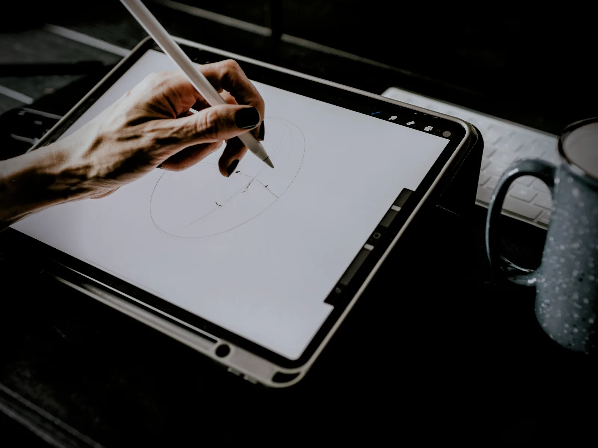

AURA Pencil Pro
Precisión de píxel. Tacto de pincel.
Aprieta para abrir la paleta de herramientas, gíralo para orientar el trazo y nota cada gesto con una respuesta háptica sutil. Se empareja y se carga con un clic magnético en el lateral.
Compatible con toda la gama auraPad.
